MOUTHLOOP V2 GUIDE
MouthLoop v2 — expressions and gestures
A free Gemini Canvas app that turns a single image into lip-sync character assets, complete with expressions and gestures
- Free
- No API key
- Gemini Canvas
- Expressions & gestures
- Works with SlideCast Studio
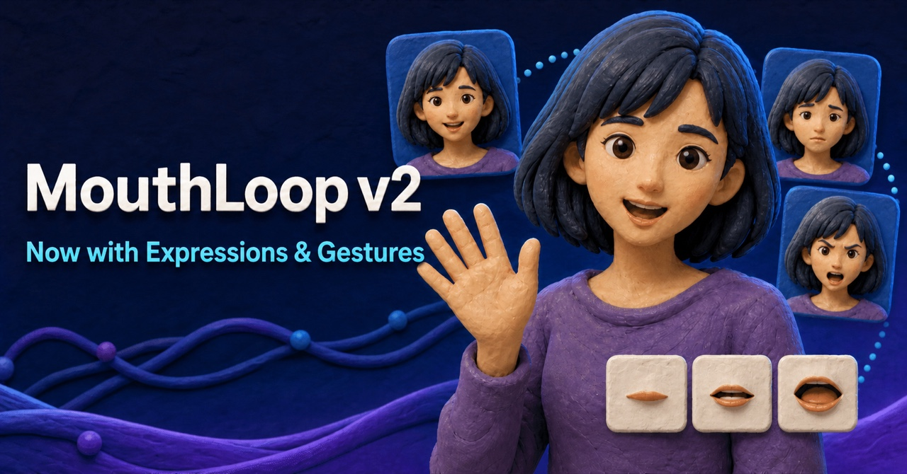
👋 OVERVIEW
What this page covers
MouthLoop, the free tool that builds lip-sync assets from a single image, has been updated to v2. Expressions (smiling, sad, angry) and gestures (waving, scratching your head and so on) have been added, and everything you save now comes out as a single character pack ZIP for SlideCast Studio.
You do not need to have read the previous article. This page alone takes you from preparation through saving to loading the result into SlideCast Studio.
If you use this with SlideCast Studio
SlideCast Studio itself needs to be on v3.4 or later.
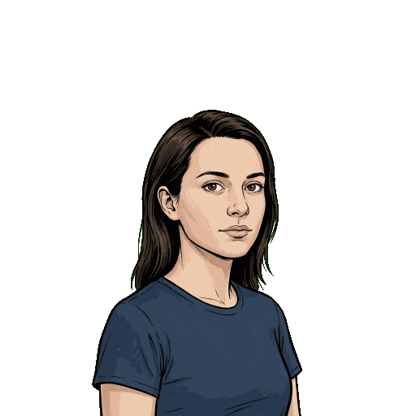
UPDATEWhat changed since v1
This update moves the output from “an asset that only moves its mouth” to “a character with expressions and gestures”.
| Item | v1 | v2 |
|---|---|---|
| 🙂 Expressions | One only | Neutral plus smiling, sad and angry (up to four) |
| 👋 Gestures | None | Up to three. Six presets, or write your own |
| 📦 Main output | A ZIP of six PNGs | Consolidated into the character pack ZIP |
| 🔧 Default method | Redraw the whole thing | Replace the face only (recommended) |
| 📐 Export size | Chosen up front | Chosen at save time, with the real file size shown |
| ▶️ Checking the result | Only after building the WebP | Played back on the spot in step 4 |
| ♻️ Regeneration | Just press the button | You can attach extra instructions |
| ➕ Also new | — | Camera angle, gaze, single-eye off, margin, background removal strength and art style |
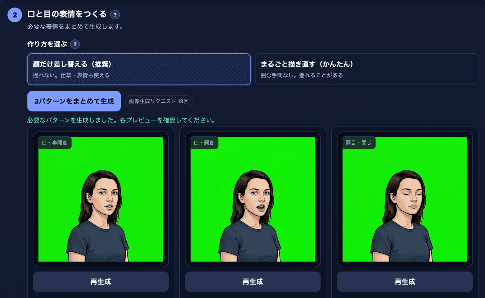
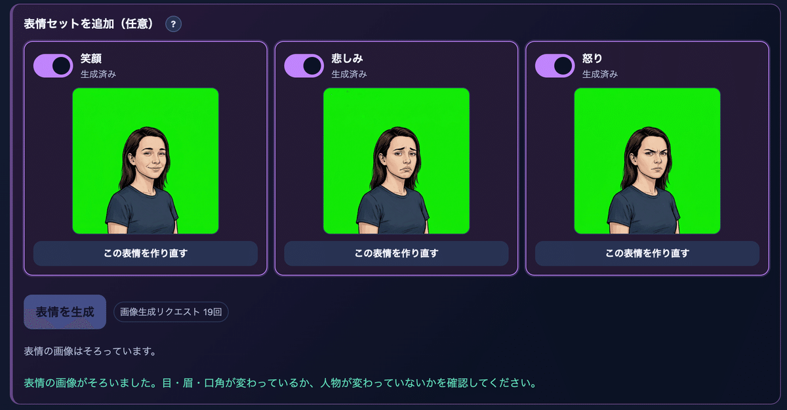
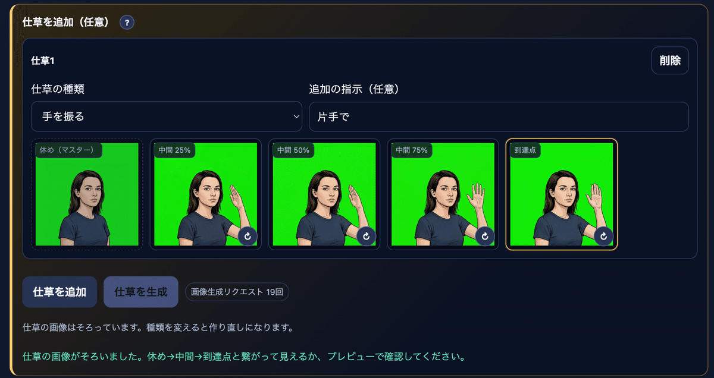
OUTPUTWhat MouthLoop v2 produces
There are two files you can save. In v2 the ZIP of six PNGs has been replaced by the character pack ZIP.
📦 1. Character pack for SlideCast Studio (ZIP)
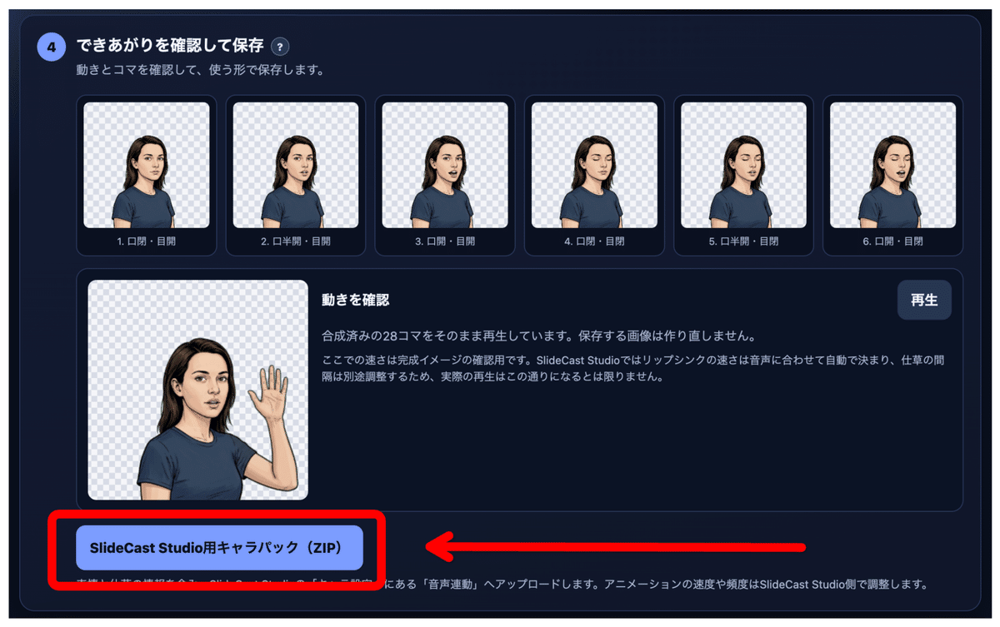
Inside you get six PNGs per expression, the numbered PNGs for each gesture, and a manifest.json that says what each of them is.
- Three mouth states × two eye states — six images in the same position and the same framing
- The same six images for every expression you added
- Four frames for each gesture
- Uploads to “Audio-driven” in SlideCast Studio as a ZIP, unopened
When in doubt, take the character pack ZIP
The “numbered PNG ZIP” from v1 has been folded into the character pack. If you are heading for SlideCast Studio, this one ZIP is all you need to save.
🔁 2. Animated image (WebP / APNG)
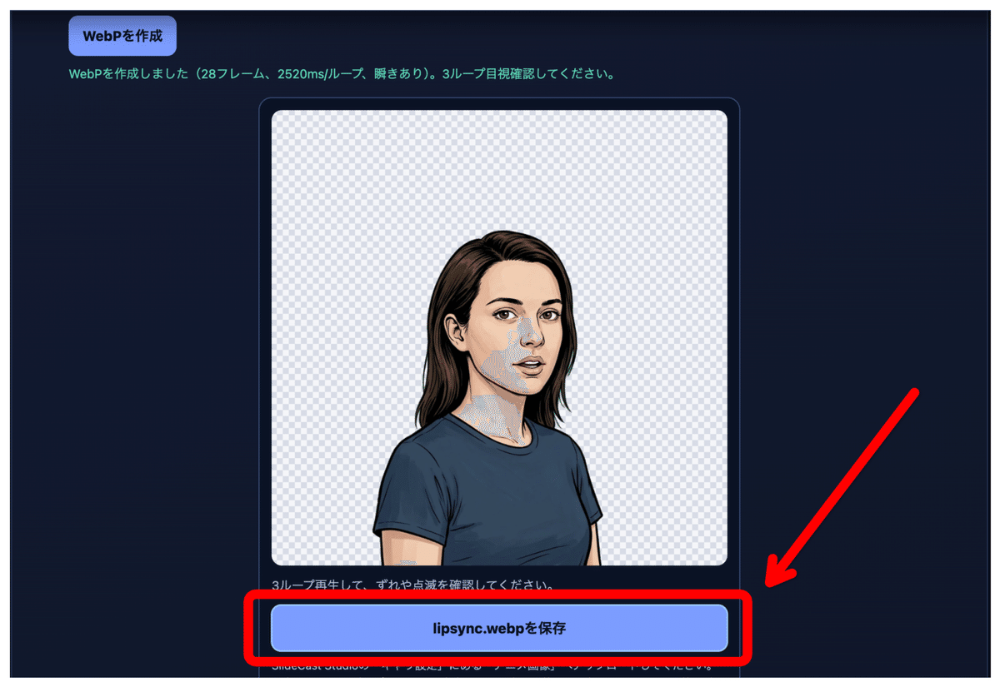
A looping animation with the lip sync, the blinking and the gestures baked in. It moves as a single file, but it does not follow the audio, and it holds only the one expression you had selected.
This is an optional export, for places where audio-driven mode is not an option.
BEFORE YOU STARTWorth knowing before you begin
There is nothing to install, no extra account to register, and no API key to enter.
🧰 What you need
- An account that can use Google Gemini (Canvas)
- An image to start from — or none, since the tool can generate one for you
⚠️ Your work is not saved
MouthLoop keeps nothing — neither your images nor what you typed. Everything is processed inside your browser.
Save before you close the tab
Closing the screen discards all of your work. Save the finished character pack ZIP while you are still there.
📱 On phones and tablets
- On a phone, use Gemini in the Chrome browser. Saving files is blocked inside the Gemini app
- On iPad and iPhone, APNG is used automatically in place of WebP
On iPad, the character pack ZIP is the safe bet
SlideCast Studio on iPad Safari cannot always load APNG. The character pack ZIP used in audio-driven mode is confirmed to work on iPad.
🌐 Switching between Japanese and English
Use the JA / EN button at the top right of the screen. Japanese is the default.
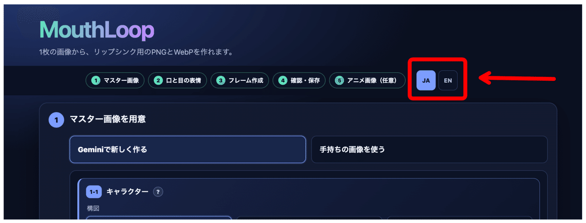
HOW TOHow to use it: all five steps
Follow the step bar across the top of the screen, from top to bottom.
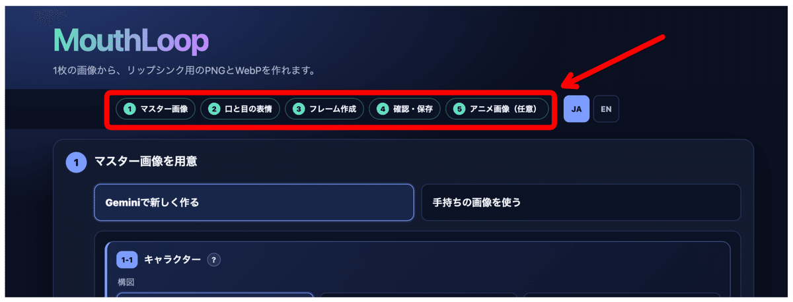
- Master imageSettle on the single image everything is built from
- Mouth and eye expressionsExpressions and gestures are added here too
- Build the framesMark the areas to be replaced
- Check and saveConfirm the result and save the character pack ZIP
- Animated image (optional)Export a WebP / APNG
Step 1: Prepare the master image
Settle on the one image everything else is built from. There are two ways to get there.
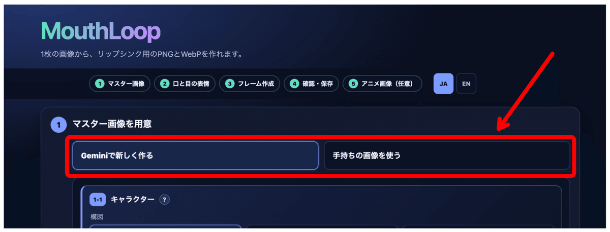
🅰 Generate a new one in Gemini
Fill in the form and press generate. What you can specify:
- Framing: head only / bust-up (default) / full body
- Character: type, gender and mood, age, hairstyle, hair colour, skin tone, and a free-text field
- Clothing and art style (v2 adds options such as “detailed realistic illustration” and “graphic novel”)
- Reference images (up to four): for each one, say whether it is a reference for the look, the clothing, the art style or the colour palette
- Expression: neutral / gentle smile / your own wording
- Background colour: pick a colour that does not appear on the character
NEWNew in v2: camera angle and gaze
You can now choose the camera angle (straight on / nearly straight on / 45 degrees / side view / slightly above / slightly below / your own wording) and the gaze (at the camera / just off camera / to the side / slightly up or down / your own wording). The defaults are “straight on, looking at the camera”, which gives you the same result as before.
Press “Show prompt” to copy the exact text that will be sent to the AI. It is also handy if you would rather make the image in a different AI service.
🅱 Use an image you already have
Load an image of your own. Drag and drop and pasting both work. Once it is loaded, you choose one of three options.
- Use it as is: for images with a transparent background, or a flat colour with a clean outer edge
- Fix the background only: keep the expression, the angle and the framing, and turn the background into a flat colour
- Prepare it as a master: go further and adjust it to face forward, open the eyes and close the mouth
“Use it as is” is not available for photos or anything else with a busy background. Use one of the other two to clean up the background first.
✂️ Finally, crop the area you want to use into a square
Drag the frame into position and resize it from the corners. It snaps as it nears the centre, and the guide turns green. Arrow keys work for fine adjustments.
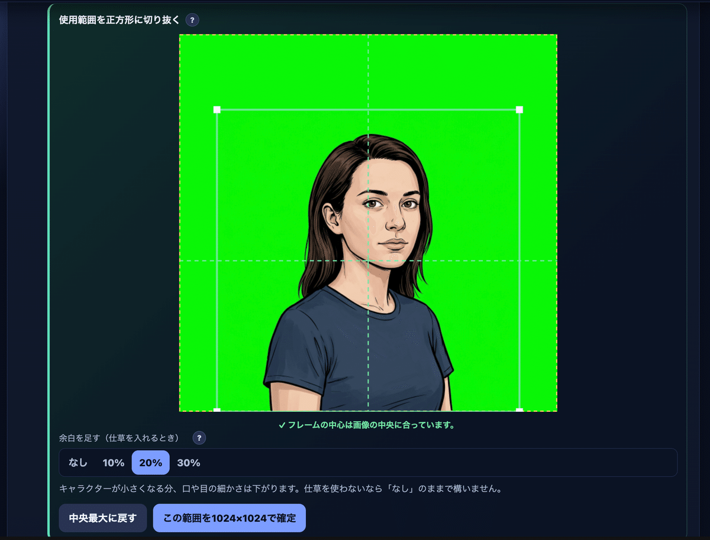
NEWNew in v2: “Add margin (for gestures)”
Add a gesture to a bust-up shot and the arms and hands can run off the edge. So you can now add 10%–30% of margin at the crop stage.
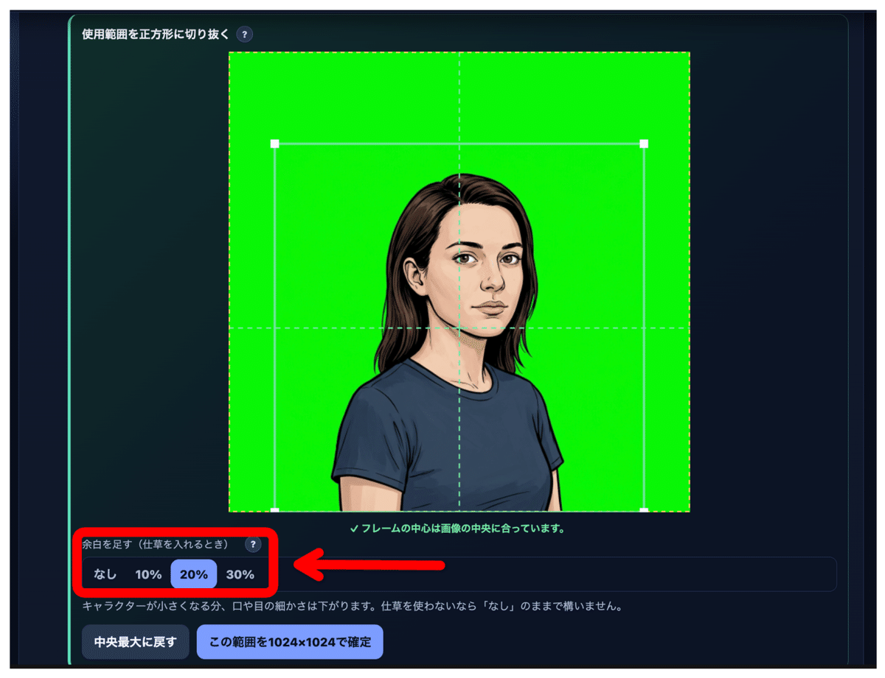
- The character is placed slightly smaller, leaving room to raise an arm
- Anything outside the original image is filled with the background colour
- For art that is cut off at the bottom, the bottom edge is kept and margin is added above and to the sides
- No image generation happens (it uses none of your API allowance)
The mouth and eyes end up correspondingly smaller, so leave it at “none” if you are not using gestures.
Press “Confirm this area at ◯◯×◯◯” and step 1 is done. The number shown is the working resolution for everything that follows (derived automatically from the crop, between 256 and 1024px).
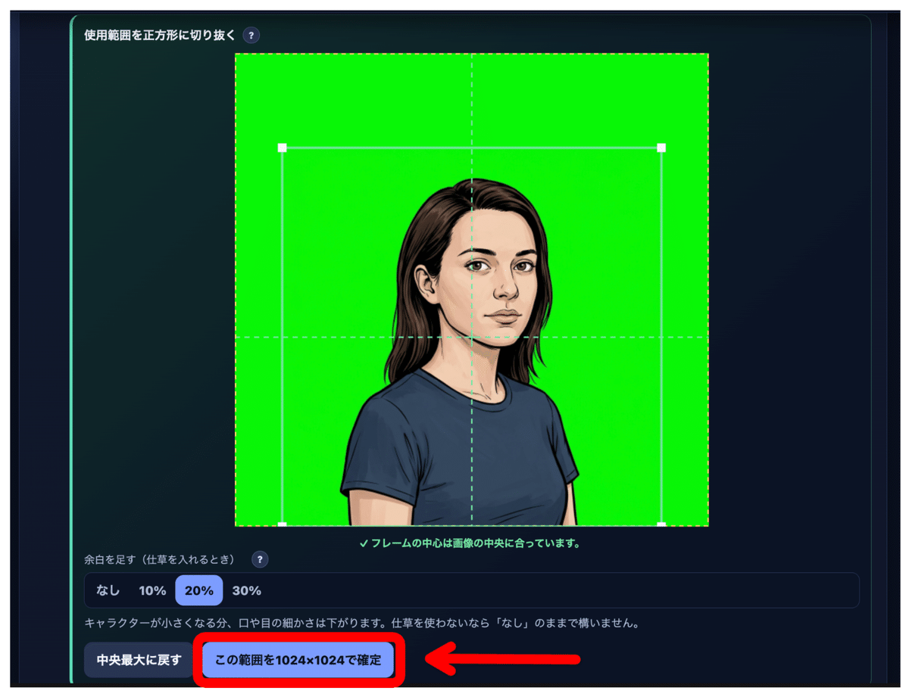
Step 2: Build the mouth and eye expressions
This is where v2 changed the most. From the top, it is now three blocks: “Choose a method” → “Expression set” → “Gestures”.
🔧 Choose a method (the default has changed)
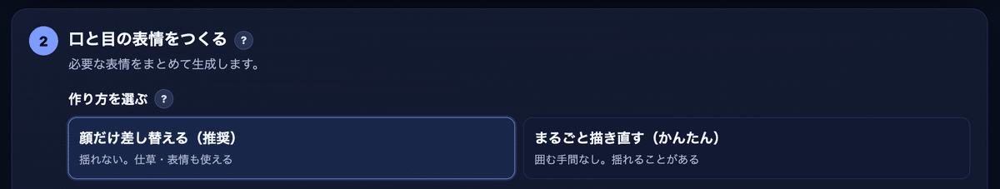
Replace the face only (recommended, default) | 3 images generated
Takes the master as the base and swaps out only the areas you marked. Nothing outside those areas changes by even a pixel, so nothing wobbles. The cost is the work of marking the mouth and each eye.
Redraw the whole thing (easy) | 5 images generated
Lines up the five generated images as they are. No marking to do, but because everything is redrawn each time, hair and outlines can shift from frame to frame.
🙂 Add an expression set (optional)NEW
You can add smiling, sad and angry. Every expression you add gets a full set of six lip-sync images.
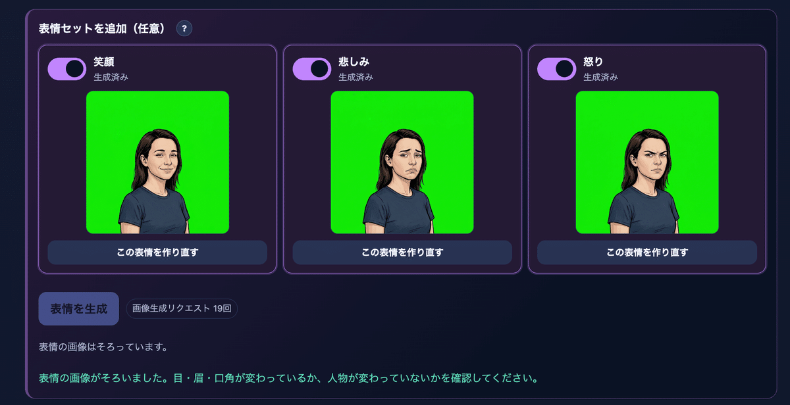
The mechanism is simple: one image per expression is generated, redrawing only the eyes, brows and mouth of the master. The body, the clothes, the background and the arms stay exactly as they were, so adding expressions never changes the person.
- The extra cost is one image per expression (three images for all three)
- The talking mouth shapes and the blink are reused from the neutral expression
- Saving gives you a single ZIP with one folder per expression
👋 Add gestures (optional)NEW
Movements such as waving or scratching your head, dropped in between stretches of lip sync. Up to three of them.
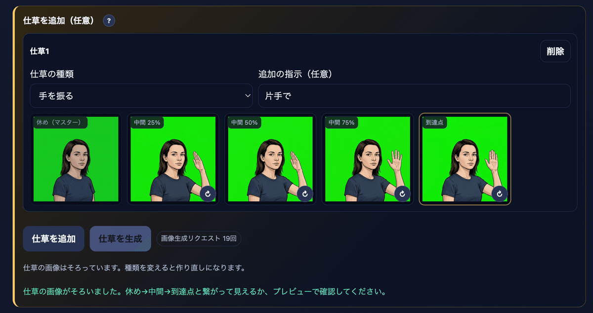
The choices: wave / scratch your head / point / fold your arms / thumbs up / present with an open palm / write your own
Each gesture can carry extra instructions too, such as “with one hand” or “slowly and broadly”.
Gestures are built in two stages.
- First generate only the end pose — then check that it matches what you had in mind
- If not, press ↻ to redo it; if it is right, press “Generate the remaining in-between frames”
The in-between frames are built from the end pose, so checking the end pose first means less to redo (the total number of images generated is the same either way). One gesture is four images: the end pose plus three in-betweens (25 / 50 / 75%).
💰 How many images this takes
In v2 you assemble the workload yourself. The buttons always show the number of images, so you can check before you press.
- Mouth and eyes, the basics (replace the face only)
- 3 images
- Each expression added
- +1 image
- Each gesture added
- +4 images
- Fully loaded (3 expressions + 3 gestures)
- 18 images in total
Once they are generated, look through the previews and check that the mouth really is open, that both eyes are closed, and that the brows, the hair and any accessories have not changed.
NEWNew in v2: regeneration can carry extra instructions
“Regenerate” on any card, and the ↻ on a gesture, open a popup where you can type an instruction such as “open the mouth less”, up to 160 characters (leaving it empty is fine).
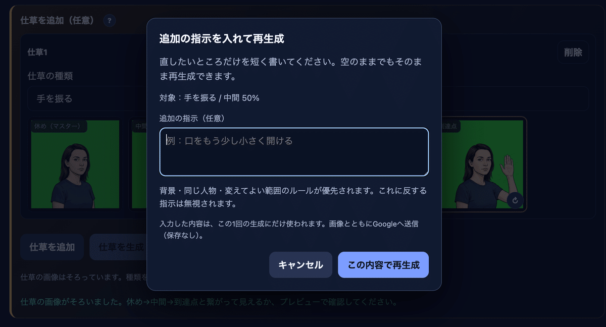
- The instruction applies to that one generation only and is not stored
- The rules about the background, keeping the same person and what may change take priority, so instructions that conflict with them are ignored
Step 3: Build the frames (mark the areas)
With “Replace the face only”, you first mark the areas to be replaced. Just drag across the face. Fairly rough marking works well, so try something rough first — you can adjust it afterwards.
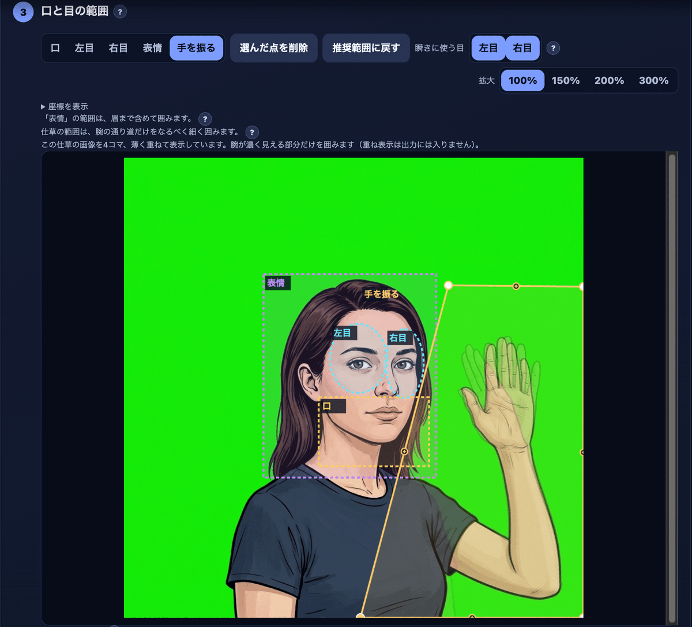
How many areas you mark depends on what you chose.
- Mouth (always) — the smaller you mark it, the more stable the result
- Left eye and right eye (always) — the same applies. They are separate so that the brow ridge, the bridge of the nose and the bridge of a pair of glasses stay out of the replaced area
- Expression (when using expression sets) — mark it wide enough to include the brows. Leave the brows out and anger and sadness barely read at all
- Gesture (when using gestures) — mark only the path the arm travels, as narrowly as you can
NEWNew in v2: background removal strength, and which eyes blink
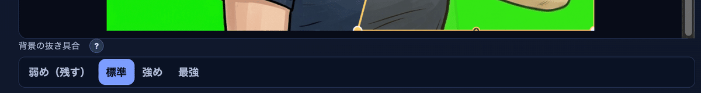
- Background removal strength (light, standard, strong, maximum): use “strong” when the background colour clings to the outline, and “light” when fine details in hair or clothing are being eaten away. After changing it, just press “Build and verify the 6 frames” again (nothing is regenerated)
- Eyes used for blinking: when only one eye is visible — a side view, or hair covering one — switch the other one off
In a full-body framing the face is small, so the 300% view makes the marking much easier.
When you are ready, press “Build and verify the 6 frames”. The background is made transparent and the frames are assembled.
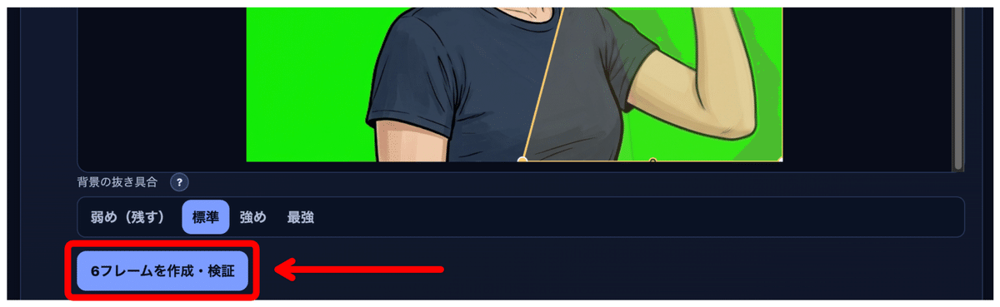
Step 4: Check the result and save it ★ this is where you save
NEWNew in v2: check the movement on the spot
You can play the finished frames right there. No image generation happens. In v1 you could not see the movement without building a WebP first, so this makes checking much faster.
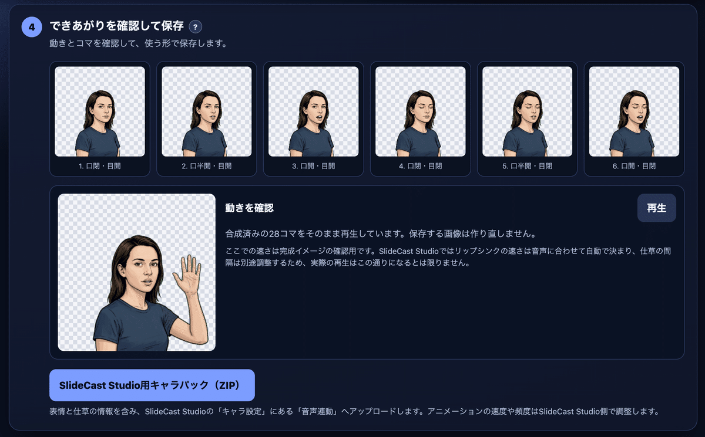
💾 Save the “character pack for SlideCast Studio (ZIP)”
Pressing save opens a dialog for choosing the export size (512 / 768 / 1024px).
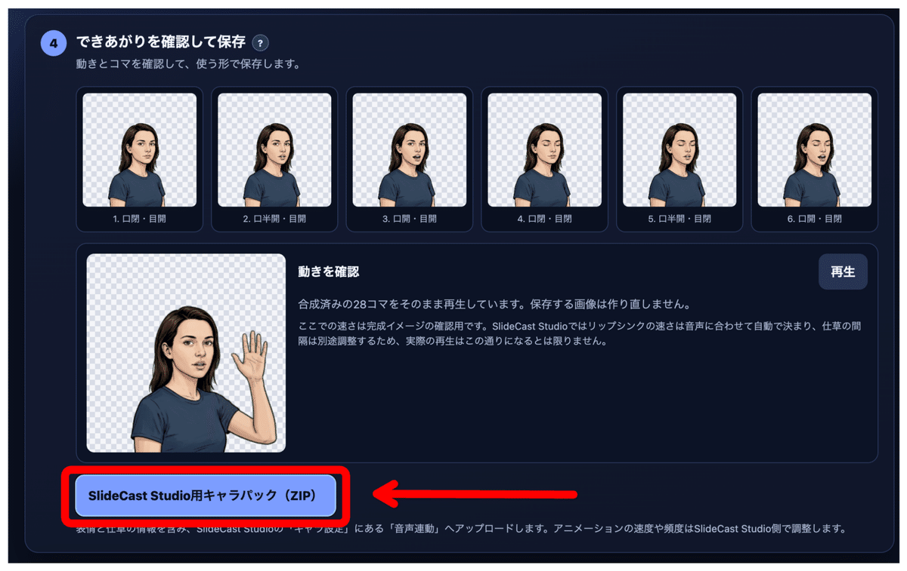
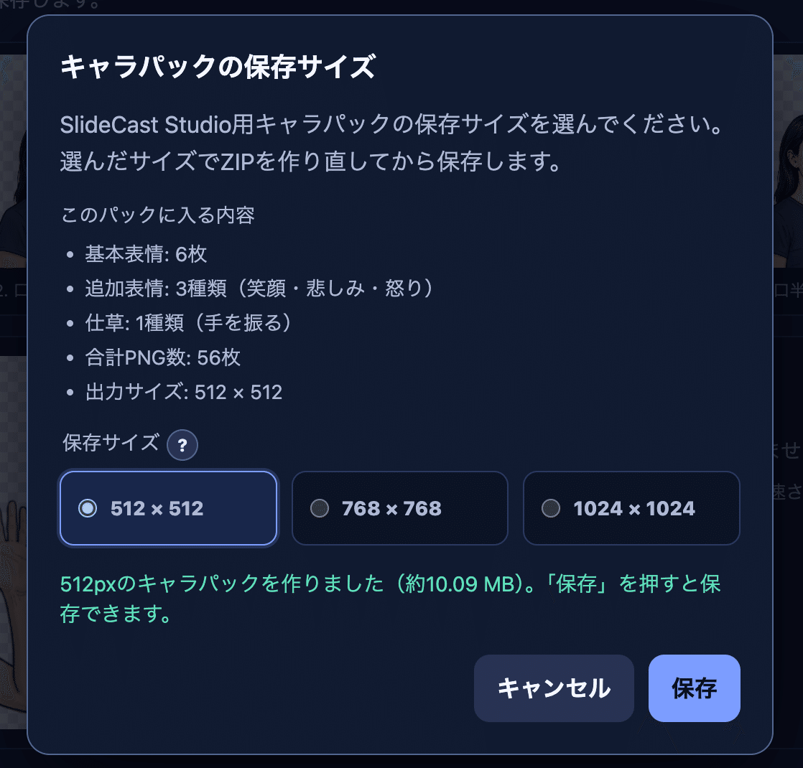
- Choosing a size builds the file there and then, and shows you the actual size. You find out before you hit an upload limit, not after
- Changing the export size does not discard the face variations you have generated
- Choosing a size larger than the working resolution means upscaling, and the dialog says so
- With a lot of frames, 512px is recommended (the ZIP limit is 50MB)
Before saving, “what goes into this pack” is listed — the number of base-expression images, the added expressions, the gestures and the total PNG count — so you can confirm the contents are what you intended.
Step 5: (optional) export an animated image
For situations where audio-driven mode is not available, you can also build a looping animation.
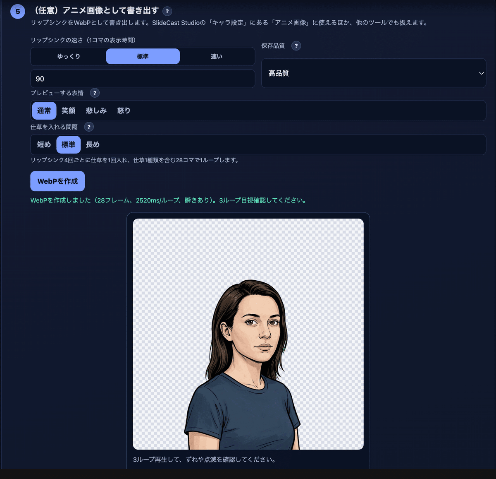
- Expression to preview: which expression the animation is built from (the ZIP still contains all of them)
- Lip-sync speed: fast / standard / slow
- Gesture interval: short / standard / long (how many rounds of lip sync pass between gestures)
- Export quality: higher looks better and weighs more (APNG is lossless, so it has no setting)
Press “Build the WebP” (“Build the APNG” on iPad and iPhone) and a preview appears. Watch it loop three times and check for drift or flicker before you save.
SLIDECAST STUDIOUsing it in SlideCast Studio
You upload it under Settings → Character → Character assets and motion.
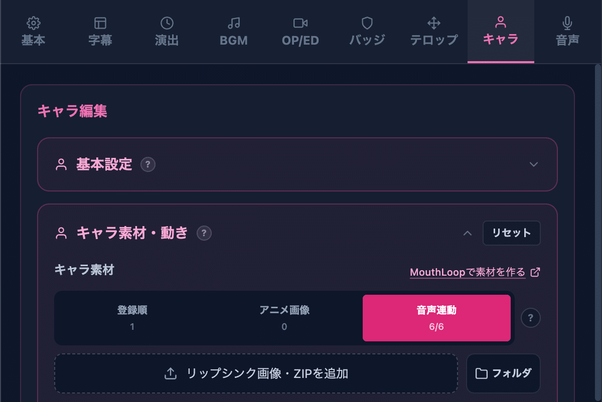
🎙 Use it in audio-driven mode (recommended)
Under “Character assets and motion”, upload the character pack ZIP to “Audio-driven” without unpacking it.
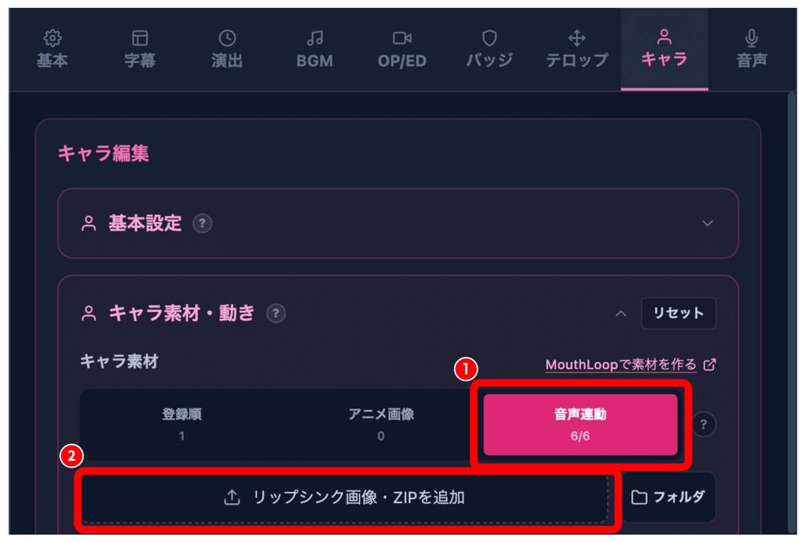
- The mouth moves along with the narration audio
- The expressions and gestures are registered at the same time
- Speed and gesture frequency are adjusted on the SlideCast Studio side
🔁 Use it as an animated image
Under “Character settings”, upload the WebP / APNG to “Animated image”. It keeps moving at a steady rhythm, regardless of the narration.
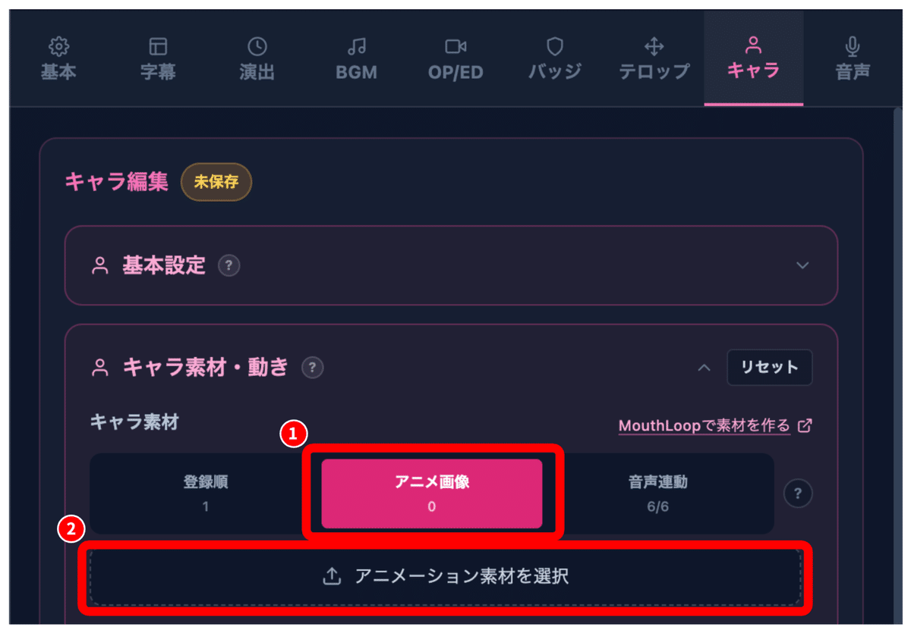
🤔 Which one should you use?
| Comparison | 📦 Character pack ZIP | 🔁 Animated image |
|---|---|---|
| How it moves | Follows the narration audio | Loops at a steady rhythm |
| Expressions | All of them are included | Only the one you picked |
| Gestures | Timing adjustable afterwards | Frequency fixed at export time |
| Image quality | Lossless PNG | WebP is lossy; APNG is lossless |
| iPad | Works | May fail to load |
When in doubt, take the character pack ZIP
It gives you audio-driven movement, every expression, and gestures you can retime later.
TROUBLESHOOTINGWhen something does not work
- The gesture or expression panel says it is unavailable
- Switch “Choose a method” to “Replace the face only”. For gestures, also check the framing you chose in step 1.
- The arms or hands run off the edge during a gesture
- Go back to the crop in step 1, set “Add margin” to around 20%, and try again. 30% is available if that is not enough.
- Anger and sadness do not come across
- Mark the “expression” area in step 3 again, this time including the brows.
- Adding a gesture makes the face move too
- Narrow the “gesture” area down to just the path the movement travels, such as the arm and hand.
- The result flickers
- Use “Replace the face only” and keep the marked areas small. Colour differences between generated images can also cause flicker.
- Only one eye closes, or the expression falls apart
- Regenerate that card. In v2 you can attach extra instructions. Nothing is ever regenerated automatically on the grounds of quality.
🎨 The background colour clings to the outline, or fine details are eaten away
Adjust “background removal strength” in step 3 and press “Build and verify the 6 frames” again. No images are regenerated.
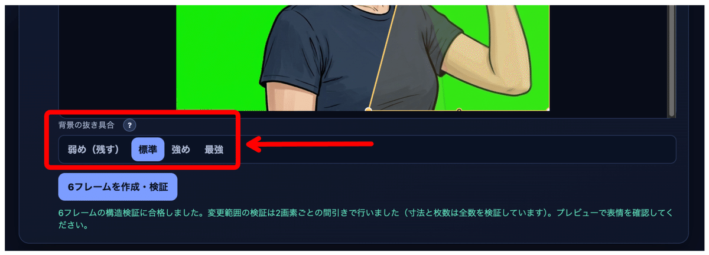
- The ZIP is too large to save
- Drop the export size to 512px, or use fewer expressions and gestures. The limit is 50MB. Images you have already generated are not deleted.
- Generation fails
- Wait a while and try again. If you have hit a usage limit, pressing repeatedly will not help.
- Does a larger export size mean better quality?
- No. Anything larger than the working resolution is upscaling, and adds no detail.
CAUTIONSThings to keep in mind
- Check whether your intended use of the generated result is allowed under Google’s terms
- Do not use it to impersonate a real person
- What you type and the images you supply are sent to Google Gemini only while an image is being generated, and are not stored in the tool
- Save the finished character pack ZIP before you close the screen
SUMMARYIn summary
MouthLoop v2 turns a single image into character assets that have expressions and gestures as well as a moving mouth.
- Smiling, sad and angry, at one generated image per expression
- Up to three gestures, each checked at the end pose before the rest is built
- The character pack ZIP uploads straight into audio-driven mode in SlideCast Studio
- Step 4 plays the movement back on the spot
- APNG is used automatically on iPad and iPhone
- Nothing to install, nothing to register, no API key
If you are coming from v1, the easiest place to start is to leave it on “Replace the face only” and add a single expression. That costs one generated image.